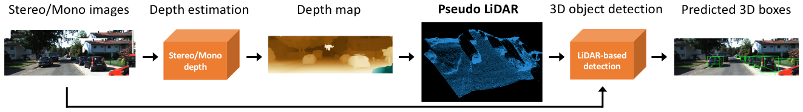
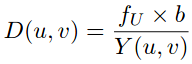
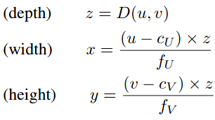

biblio-self-driving-cars

View the Project on GitHub maiminh1996/biblio-self-driving-cars
Pseudo-LiDAR 
CVPR 2019 Pseudo-LiDAR from Visual Depth Estimation: Bridging the Gap in 3D Object Detection for Autonomous Driving

| Category | Description |
|---|---|
| Type | ● Monocular OD / supervised ● Stereo OD / supervised |
| Contribution | Bridging the gap between camera based approach and lidar based approach by a simple conversion from 2D depth map into pseudo 3D point cloud |
| Key ideas | 1. Depth estimator (SOTA) ➔ depth map ➔ 2. Convert into pseudo 3D point cloud ➔ 3. LiDAR-based object detector (SOTA) ➔ 3D object bbox |
| Pipeline | ● Train mono depth estimator DORN on 23488 KITTI images (raw data) (some of these images may **overlap** with our validation data for detection) ● Train bino depth estimator PSMNet on Scene Flow and then fine-tuning on the 200 training pairs of KITTI stereo 2015 (200 training images of KITTI stereo 2015 **overlap** with thevalidation images of KITTI object detection) ● Train Frustum PointNet (F-POINTNET) & AVOD on generated pseudo point cloud |
| Network | DORN, PSMNet ➔ F-PointNet, AVOD |
| Loss | DORN, PSMNet ➔ F-PointNet, AVOD |
| Params + Time | |
| Tech | Inverse Projection Transformation 3D reconstruction ● Disparity to depth D(u, v): depth map at picel (u, v); fU: horizontal focal length of the left camera; b: horizontal offset (i.e., baseline) of stereo camera; Y(u, v): the horizontal disparity from left image to right image for each pixel  ● depth to 3d point (x, y, z): 3D location of each pixel (u, v) (cU, cV) is the pixel location corresponding to the camera center and fV is the vertical focal length  |
| Limitations | ● Pseudo point cloud depends strongly on the accuracy of depth estimator depth limitation ● Training process is cumbersome ● Not an end-to-end training fashion ● does not perform well for far-away object |
| TOTEST | How about radar, lidar 16, lidar 32, 1line??? |